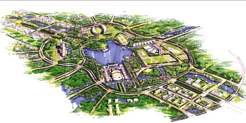
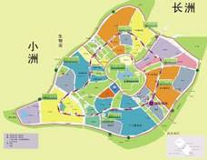
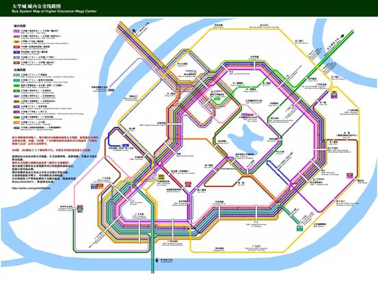
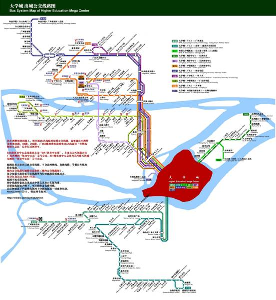
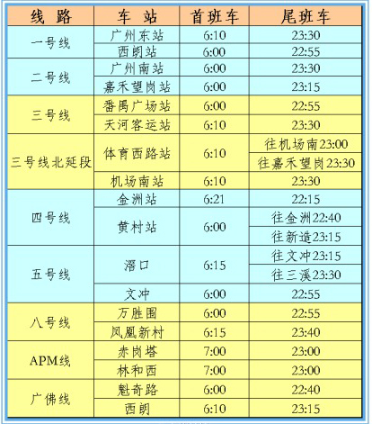

- 军训攻略
- 大学First Day
- 抵玩华师
- 学の华师
- 食の华师
- 住の华师
- 行の华师
- 华师の景
- Ucity简介
- Ucity2014年成就
大学城出行，先从大学城地形说起。大学城坐落于小谷围岛，面积为34.4平方公里。2004年9月1日，一期进驻十所高校，分别是：中山大学、华南理工大学、华南师范大学、广州大学、广东外语外贸大学、广州中医药大学、广东药学院、广东工业大学、广州美术学院、星海音乐学院。

大学城的道路主要有内、中、外三个环形路以及众多连接三个环形路的直路，U仔总结出一个口诀：外环飙车，中环搭车，内环跑步。

外环飙车：
外环约15.5公里，地势高低起伏，十分适合自行车爱好者在此切磋车技。不过，外环也会有豪车在此上演“极品飞车”，各位骑友记得注意安全。
中环搭车：
位于各大高校教学区与生活区之间的中环交通最为便利，有大量公交经过，而且还有南北两个商业区可供同学们放松。所以如果大家要乘坐公交出行的话建议在中环上车。
内环跑步：
内环约4.5公里，是学生吃完饭散步或跑步减肥的好去处，旁边还有美丽的中心湖，实乃泡妞圣地吖！
关于地铁：
地铁四号线的大学城北站临近华师，同学们只需要穿越北区后往中大方向步行300米左右即可到达地铁站口，方便快捷。
关于自行车：
在大学城拥有一台自行车意味着你可以快捷的往返于大学城十所高校之间，而且有空还能去外环踩单车锻炼身体，一举两得。U仔建议大家都买一辆，不过要注意好防盗哦。
附录:华师附近公交列表以及地铁运营时间图
| 公交车名 | 路线 |
营运时间及收费 |
B25 |
大学城总站(中部枢纽) - 广大公寓[大学城] - 广大生活区[大学城] - 广大[大学城] - 华师[大学城] - 星海学院[大学城] - 仑头立交 - 琶洲大桥北 - 科韵路 - 学院(BRT) - 上社(BRT) - 华景新城(BRT) - 师大暨大(BRT) - 岗顶(BRT) - 石牌桥(BRT) - 体育中心(BRT)（16站） |
大学城总站(中部枢纽) 07:00--22:00 体育中心 07:00--22:00 票价2元 |
381 |
单向行驶：大学城总站(中部枢纽) - 广大[大学城] - 广大生活区[大学城] - 广大公寓[大学城] - 广美生活区[大学城] - 中环西路 - 广工[大学城] - 综合商业南区 - 华工[大学城] - 华工生活区[大学城] - 广中医广药[大学城] - 广外[大学城] - 中环东路 - 中大[大学城] - 综合商业北区 - 星海学院[大学城] - 华师[大学城] - 大学城总站(中部枢纽) (18站) |
大学城总站(中部枢纽)环线 06:30--22:30 票价1元 |
382 |
单向行驶：外环西路总站(北亭广场) - 西五路 - 中部枢纽 - 华师[大学城] - 星海学院[大学城] - 综合商业北区 - 中大[大学城] - 中环东路 - 广外[大学城] - 广中医广药[大学城] - 华工生活区[大学城] - 华工[大学城] - 综合商业南区 - 中心大街南(电信大楼) - 广工[大学城] -中环西路 - 广美生活区[大学城] - 广大公寓[大学城] - 广大生活区[大学城] - 中部枢纽 - 西五路 - 外环西路总站(北亭广场) (22站) |
外环西路总站(北亭广场)环线 06:25--22:25 票价1元 |
383 |
大学城总站(科学中心) - 广大生活区[大学城] - 广大[大学城] - 华师[大学城] - 星海学院[大学城] - 综合商业北区 - 内环西路 - 省中医院大学城医院 - 中心大街南 - 内环东路 - 广药生活区[大学城] - 东四路南 - 东四路北 - 赤坎桥 - 南田坊 - 深井市场 - 长江路口 - 三角亭 - 长洲街办 - 八十四中学 - 长洲岛小学 - 福南坊 - 金洲北路 - 长洲码头总站 (24站) |
大学城总站(科学中心) 06:40--21:40 长洲码头总站 07:00--22:00 票价2元 |
387 |
大学城总站(广大) - 广大[大学城] - 西五路 - 中部枢纽 - 华师[大学城] - 星海学院[大学城] - 综合商业北区 - 内环西路 - 省中医院大学城医院 - 综合商业南区 - 华工[大学城] - 华工生活区[大学城] - 东二路东 - 东一路 - 大学城总站(穗石村) (15站) |
大学城总站(广大) 07:00--22:00 大学城总站(穗石村) 07:00--22:00 票价1元 每小时一班，逢整点发班 |
387短线 |
大学城总站(广大) - 广大[大学城] - 西五路 - 中部枢纽 - 华师[大学城] - 星海学院[大学城] - 综合商业北区 (7站) |
大学城总站(广大) 08:30--17:30 综合商业北区(大学城) 08:00--17:00 票价1元 |
大学城2线 |
大学城总站(广中医) - 东三路 - 华工生活区[大学城] - 华工[大学城] - 综合商业南区 - 广工[大学城] - 中环西路 - 美术学院[大学城] - 华师[大学城] - 星海学院[大学城] - 仑头立交 - 琶洲大桥北 - 科韵路 - 棠安路[中山大道] - 科学院地化所 - 省农干科干院 - 农科院 - 华工大(总站) (18站) |
大学城总站(广中医) 07:00--22:00 华工大总站 06:30--22:00 分段收费，全程3元 |
大学城4线 |
大学城总站(广大) - 广大生活区[大学城] - 广大公寓[大学城] - 广美生活区[大学城] - 中环西路 - 广工[大学城] - 省中医院大学城医院 - 内环西路 - 星海学院[大学城] - 综合商业北区 - 仑头立交 - 琶洲大桥北 - 员村四横路口 - 程介村 - 员村山顶 - 华侨医院(潭村) - 国防大厦 - 石牌村 - 冼村 - 人民日报华南分社 - 动物园南门 - 广东工大 - 黄花岗 - 动物园 - 沙河顶 - 沙河大街 - 豪景花园 - 天平架(总站) (28站) |
大学城总站(广大) 07:00--22:00 天平架总站 06:30--22:00 票价3元 |
夜48路 |
体育中心 - 石牌桥 - 岗顶 - 师大暨大 - 华景新城 - 上社 - 学院 - 琶洲大桥北 - 星海学院[大学城] - 华师[大学城] - 大学城总站(中部枢纽) (11站) |
体育中心 22:30--00:00 大学城总站(中部枢纽) 22:30--23:30 票价4元 |
★U仔温馨提示
由于华师站距离生活区较远，华师人一般选择星海学院站，初来乍到的新生们不要坐错站了啊~ 传说中，B25是华师人的“校巴”，搭乘B25可直达华师石牌校区（师大暨大站），但由于B25也是直达市区的公共汽车，速度也快，所以总是“人才济济”啊。


部分图片转自网络

Ucity简介
Ucity校园传媒是华南师范大学学生工作处指导下的实践、创新、培训基地。Ucity校园传媒致力于为广大学子提供各类校园资讯、计算机维修服务及大型校园活动策划实施等······